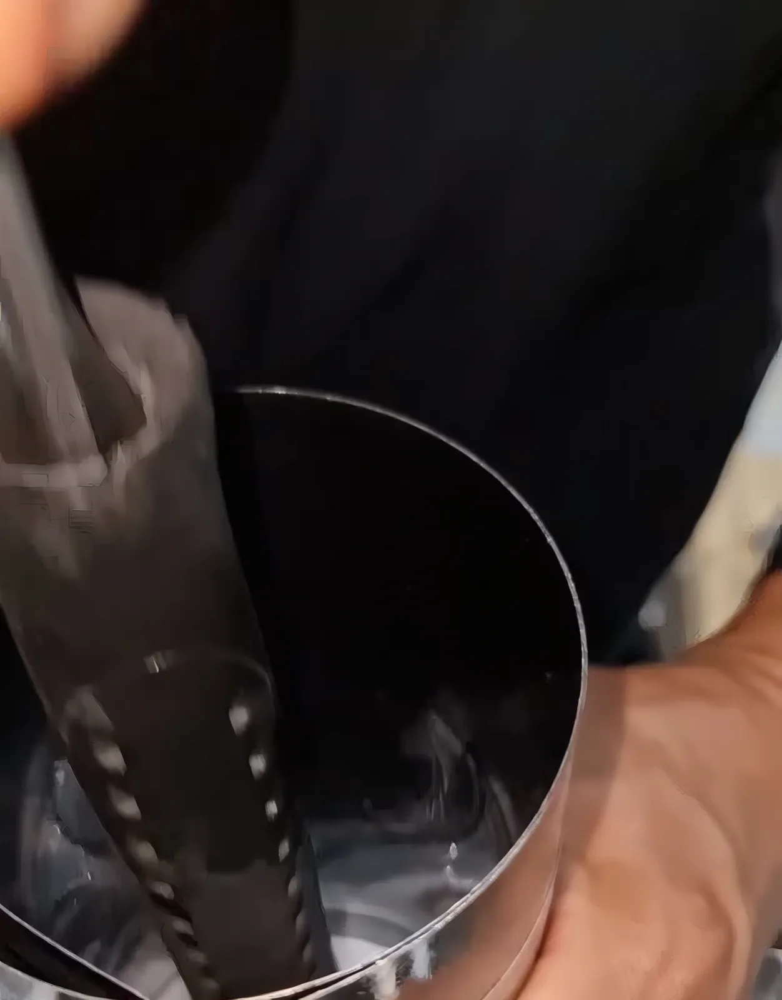

جراندأوتوماستر
إصلاح المحركات وناقل الحركة للسيارات الأوروبية وكل الماركات الأخرى، في ورشتنا في القوز. نستلم سيارتك من أي مكان في دبي ونرجعها لك.
- الورشة
- مستودع رقم 4، شارع الأصايل، منطقة القوز الصناعية 4، دبي
- الموبايل
- 055 106 4056 · 052 727 1985


نصلح ونصون هذه الماركات وغيرها:
بديل حقيقي عن الوكالة
فنيونا عندهم خبرة بمستوى الوكالة ويتدربون باستمرار على السيارات الجديدة، فتحصل على نفس جودة الشغل بدون أسعار الوكالة. نستخدم قطع غيار ذات جودة وطرق صحيحة، فيبقى ضمان المصنع ساري.
نحدد العطل بأجهزة فحص حديثة، ونصلحه صح من أول مرة، وما تحتاج ترجع.
ماذا نصلح
اضغط على أي سطر لتشوف التفاصيل. أغلب الخدمات تنتهي في نفس اليوم.
01المحركإصلاح، عَمرة كاملة، أصوات، ارتفاع الحرارة
- إصلاح وتبديل المحرك
- عَمرة كاملة للمحرك
- تشخيص أصوات المحرك
- نظام التبريد، الرديتر، طرمبة الماء
- البخاخات ونظام الوقود
- نظام الإشعال، السيور والخراطيم

02الجير وناقل الحركةأوتوماتيك وعادي، كلتش، دفرنس
- إصلاح وصيانة وتبديل ناقل الحركة
- تغيير وغسيل زيت الجير
- الكلتش والفلايويل
- عمود الكردان والأكسل
- تشخيص وعَمرة الدفرنس
03كهرباء السياراتالسلف، الدينامو، البطاريات، النوافذ، الأقفال
- تبديل السلف والدينامو
- فحص وتبديل البطارية
- مواتير ومنظمات النوافذ
- أقفال الأبواب الكهربائية
- لمبات الأنوار، مواتير المساحات والرشاش

04الصيانة والفحصالصيانة الدورية، لمبة فحص المحرك
- الصيانة الدورية حسب المصنع
- فحص بالكمبيوتر
- تشخيص لمبة فحص المحرك وإصلاحها
- تغيير الزيت والفلاتر والسوائل
- فحص قبل السفر
05الفرامل والمساعدات والدركسونABS، المساعدات، الشاصي
- إصلاح الفرامل ونظام ABS
- المساعدات (الشوك أب)
- نظام التعليق والدركسون
- إصلاح الشاصي
- رجفة السيارة أثناء القيادة

06المكيف، الإطارات، الإكزوزوإصلاح التدفئة أيضاً
- إصلاح المكيف والتدفئة
- خدمات الإطارات
- خدمات الإكزوز
عَمرة محرك، على طاولتنا
لقطات من أحد فيديوهاتنا. كل خلوص نقيسه حسب أرقام المصنع قبل ما يرجع المحرك للسيارة.





ما نعمّر المحركات وبس. نعمّرها صح.من حسابنا على إنستغرام @grandautomaster
زوج وزوجة، من كاليفورنيا إلى القوز
بدأنا في كاليفورنيا سنة 2007 وفتحنا أبوابنا في دبي سنة 2017. معروفين بإصلاح الأعطال اللي عجزت عنها ورش ثانية، وبترميم السيارات الكلاسيكية.
ما نلمس سيارتك قبل موافقتك، ونصلح بس اللي يحتاج إصلاح: تعرف شو لازم الحين وشو ممكن ينتظر.
- 2007
- البداية في كاليفورنيا
- 4,000قدم²
- ورشتنا في القوز
- 5
- مواقع صيانة
- 8
- موظفين بدوام كامل
كيف توصلنا سيارتك
الأفضل تحجز موعد، ونستقبل بدون موعد إذا الجدول يسمح. بعض الشغلات تخلص وأنت تنتظر.
- 1
أرسل صورة
أرسل صورة أو فيديو قصير للمشكلة على واتساب، أو اتصل. قل لنا الماركة والموديل والسنة.
- 2
استلام مجاني
نستلم السيارة من أي مكان في دبي بدون رسوم، أو تجيبها لمستودع 4 في القوز 4.
- 3
نتصل فيك أول
نحدد العطل ونقول لك شو يحتاج. ما نبدأ أي شغل قبل موافقتك.
- 4
ترجع للطريق
أغلب الخدمات تخلص في نفس اليوم، ونوصل السيارة لك.
موقعنا
مستودع رقم 4، شارع الأصايل، منطقة القوز الصناعية 4، دبي
ص.ب. 393866، دبي، الإمارات. استلام وتوصيل مجاني في أي مكان في دبي.
- الورشة
- 04 341 9587
- الموبايل
- 055 106 4056 · 052 727 1985
- الإيميل
- info@grandautomaster.com